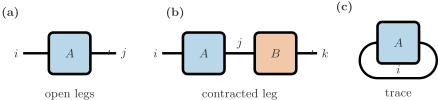
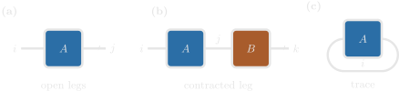
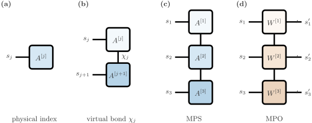
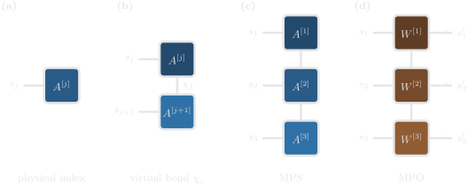

Tensor Networks in Physics
A tensor network represents a large array as a collection of smaller tensors connected by shared indices. Its usefulness comes from the structure of the object being represented: when that structure admits modest internal dimensions, we can store and manipulate the network without constructing the full array.
In ProcessTensors.jl, tensor networks provide the language for representing quantum states, operators, and processes. For a many-body state, the network often runs along a chain of physical sites. For a process tensor, it runs through time: the network retains the information needed to predict how a system responds to different interventions.
This page introduces the notation needed to read these networks, explains what their bond dimensions control, and connects familiar state and operator representations to process tensors. For hands-on examples, see ITensor Basics and MPS and MPO Basics.
Tensors, indices, and contractions
A tensor is a multidimensional array whose components are labelled by indices (or legs). A vector has one index, a matrix has two, and a general tensor can have any number. Here, the order of a tensor means its number of indices; it should not be confused with the rank of a matrix.
In a tensor diagram, a node represents a tensor and each leg represents an index. The dimension of an index is the number of values it can take. Connecting two legs means summing over their shared index, an operation called a contraction. For example,
\[C_{ik} = \sum_j A_{ij} B_{jk}\]
is both a tensor contraction and ordinary matrix multiplication. The uncontracted indices, here $i$ and $k$, are the open legs of the resulting network. A network with no open legs evaluates to a scalar.
Two other useful operations are a tensor product, which introduces no shared index,
\[(A \otimes B)_{ijkl} = A_{ij} B_{kl},\]
and a trace, which sums over a pair of compatible indices,
\[\operatorname{Tr}(A) = \sum_i A_{ii}.\]


An open leg is a free index. Joining two legs contracts that index, and joining both legs of one tensor takes its trace.
The order in which contractions are performed can strongly affect their computational cost, even though the exact result is unchanged.
ITensors.jl makes these connections explicit through Index objects. Multiplication contracts matching indices rather than relying on their position in an array:
using ITensors
i = Index(2, "i")
j = Index(3, "j")
k = Index(2, "k")
A = random_itensor(i, j)
B = random_itensor(j, k)
C = A * B # Contracts j; C has open indices i and k.Two independently created indices do not match merely because they have the same dimension and tags. A prime level also distinguishes an index from its unprimed counterpart. Priming changes index labels; it does not, by itself, transpose or complex-conjugate a tensor. When interpreting a quantum tensor, identify which legs represent inputs, outputs, kets, or bras from the stated convention.
Matrix product states
Consider a chain of $N$ sites with local basis states $|s_j\rangle$ and local dimension $d$. A general pure state is
\[|\psi\rangle = \sum_{s_1,\ldots,s_N} c_{s_1\cdots s_N}|s_1\cdots s_N\rangle.\]
Storing its coefficients directly requires $d^N$ complex numbers. A matrix product state (MPS) factors these coefficients into a chain of local tensors:
\[c_{s_1\cdots s_N} = \sum_{\alpha_1,\ldots,\alpha_{N-1}} A^{[1]s_1}_{\alpha_0\alpha_1} A^{[2]s_2}_{\alpha_1\alpha_2} \cdots A^{[N]s_N}_{\alpha_{N-1}\alpha_N}.\]


A physical index labels a local basis state. A virtual bond is the internal index that chains the site tensors. Each square is one solid colour, stepping along the chain; an MPO uses a different palette from an MPS.
For open boundaries, $\alpha_0$ and $\alpha_N$ each take a single value. Every local tensor has a physical index $s_j$ and up to two nontrivial internal indices. These internal indices are called bond indices, with dimensions $\chi_j$.
If all bond dimensions are bounded by $\chi$, the representation stores at most $O(Nd\chi^2)$ entries. This is useful when $\chi$ remains manageable; an arbitrary state can still require bond dimensions that grow exponentially with system size. In a simulation, that bond dimension is one of the main quantities to monitor. If it grows quickly across a cut, storage and contraction become expensive, and a truncated bond is an approximation to the state.
The connection to entanglement follows from a Schmidt decomposition across a cut between sites $j$ and $j+1$:
\[|\psi\rangle = \sum_{a=1}^{r_j} \lambda_a |L_a\rangle |R_a\rangle, \qquad \sum_a \lambda_a^2 = 1.\]
The smallest exact MPS bond dimension at that cut is the Schmidt rank $r_j$. A stored representation may use a larger bond. For a normalized pure state, the bipartite entanglement entropy satisfies
\[S_j = -\sum_a \lambda_a^2 \log(\lambda_a^2) \leq \log r_j \leq \log\chi_j.\]
This explains why states with limited entanglement are natural candidates for efficient MPS representations.
sites = siteinds("S=1/2", N)
ψ = MPS(sites, fill("Up", N))See ITensor Basics for index conventions and MPS and MPO Basics for siteinds and MPS construction.
An overlap $\langle\phi|\psi\rangle$ is obtained by contracting the physical legs of the two states and all internal bonds. The virtual bonds connect tensors within each state's own chain; they need not have matching dimensions or index identities between the two states. In an ITensor calculation, index labels must distinguish those separate virtual chains so that only the intended contractions occur.
Matrix product operators
An operator has both an input and an output index at each site:
\[\hat O = \sum_{\boldsymbol r,\boldsymbol s} O_{\boldsymbol r,\boldsymbol s} |r_1\cdots r_N\rangle\langle s_1\cdots s_N|.\]
A matrix product operator (MPO) factors its components as
\[O_{\boldsymbol r,\boldsymbol s} = \sum_{\beta_1,\ldots,\beta_{N-1}} W^{[1]r_1s_1}_{\beta_0\beta_1} W^{[2]r_2s_2}_{\beta_1\beta_2} \cdots W^{[N]r_Ns_N}_{\beta_{N-1}\beta_N},\]
again with boundary bond dimensions equal to one. Each local tensor has an output leg $r_j$, an input leg $s_j$, and its bond legs. For equal input and output dimensions $d$ and bond dimensions bounded by $\chi$, storage scales as $O(Nd^2\chi^2)$.
Hamiltonians, density operators, and other observables can all be represented as MPOs. Their interpretation differs, but the network operations follow the same index rules. For example, evaluating $\langle\psi|\hat O|\psi\rangle$ contracts the operator's input legs with the ket and its output legs with the bra.
An MPS represents a vector-like object. An MPO represents a map-like object. A density operator sits between these viewpoints: in Hilbert space it is an operator, while in Liouville space the same object can be treated as a vectorised state.
H_mpo = MPO(H, sites)
expect_O = real(inner(ψ', O_mpo, ψ))inner(ψ', O_mpo, ψ) is the bra–operator–ket contraction. See MPS and MPO Basics for OpSum Hamiltonians, MPO assembly, and expectation values.
A density-operator MPO can also be viewed as an MPS in Liouville space by grouping each local ket–bra pair into one index of dimension $d^2$. This local reshaping leaves the existing bond dimensions unchanged. Any subsequent compression is a separate operation. A superoperator acting on such a representation has a Liouville-space input and output, each of local dimension $d^2$.
ρ = to_dm(ψ) # Hilbert density MPO
sites_L = liouv_sites(sites)
ρL = to_liouville(ρ; sites=sites_L) # Liouville MPSSee MPS and MPO Basics for density-matrix MPOs and Liouville-Space Basics for the vectorisation. The index convention is set out on the Liouville Space theory page.
The singular values across a cut of a vectorized density operator describe its operator-space structure. They should not be interpreted as the pure-state entanglement spectrum of the physical mixed state. The ordering and meaning of the fused indices are covered in Liouville Space.
Bond dimensions and compression
Factorization alone does not guarantee a smaller representation. Compression becomes possible when some directions across a bond contribute little to the tensor being represented.
The basic tool is the singular value decomposition (SVD). After grouping a tensor's indices into a left set and a right set, we reshape it into a matrix and write
\[M = U\Sigma V^\dagger, \qquad \sigma_1 \geq \sigma_2 \geq \cdots \geq 0.\]
Keeping the largest $r$ singular values gives a best rank-$r$ approximation in the Frobenius norm,
\[M_r = U_{[:,1:r]}\Sigma_{1:r,1:r}V^\dagger_{[1:r,:]}, \qquad \|M-M_r\|_F^2 = \sum_{a>r}\sigma_a^2.\]
In a tensor network, the retained singular-value index becomes a bond. Its dimension sets how much information passes across that partition. The ITensors.jl documentation shows this decomposition on named indices: how a tensor is split, where the singular values appear, and how the factors contract back to the original object.
An MPS has gauge freedom: an invertible matrix can be inserted on one side of a bond and its inverse on the other without changing the represented state. Canonical forms use this freedom to make the tensors on either side of a chosen bond orthonormal. In that setting, the singular values at the bond give the Schmidt coefficients of the full state, rather than just the singular values of an arbitrarily chosen local tensor.
Two common compression controls are a singular-value cutoff and a maximum bond dimension. Their precise meaning depends on the algorithm. In particular, a cutoff based on discarded weight is different from a threshold relative to the largest singular value. The ACE construction described in the accompanying paper uses the relative criterion
\[\sigma_a > \epsilon\sigma_1.\]
A maximum bond dimension can impose an additional restriction. Check the relevant constructor or contraction routine before interpreting its tolerance numerically.
The discarded singular values quantify the error of an individual SVD truncation in the norm above. They do not, by themselves, bound the final error of every observable after many truncations and contractions. For a simulation, assess convergence by tightening the compression settings and comparing the quantities you intend to use. Generic SVD compression also does not automatically preserve positivity or all physical constraints of a density operator or process tensor.
ψ = tebd(ψ, H, dt, T; alg=Trotter{2}(), maxdim=32, cutoff=1e-10)For this evolution routine, maxdim caps the bond and cutoff is a discarded-weight tolerance. That is a different control from the relative singular-value threshold $\sigma_a > \epsilon\sigma_1$ used by ACE. See Unitary Dynamics for how these arguments enter a TEBD step.
From spatial networks to temporal processes
For a many-body MPS or MPO, the chain usually follows physical sites. For a process tensor, the chain follows successive time intervals. This change of interpretation is central to ProcessTensors.jl.
A process tensor describes a system's response to a sequence of interventions for a specified underlying process. Its temporal network exposes system legs at which those interventions can be attached, while internal bonds carry the information needed to connect different times.
| Network element | Meaning in a temporal process network |
|---|---|
| Local core | A tensor associated with a time interval |
| Open system legs | Interfaces for the system input and output in Liouville space |
| Internal bond | Information retained between successive temporal cores |
| Intervention tensor | A system operation connected at an available intervention time |
An intervention connects the relevant system output to the next system input. Contracting the process with a chosen sequence of operations, together with the appropriate boundary tensors, gives the corresponding output state or measurement statistics. A measurement outcome can produce an unnormalized conditional state; its trace gives the probability of that outcome sequence.
The main practical benefit is reuse. Once a process tensor has been constructed, we can change operations at its exposed intervention slots without rebuilding the environmental evolution that it already represents. Reuse assumes that the underlying process, time grid, and boundary assumptions encoded in the tensor remain applicable. Changing the environment or an interaction already included in the construction generally requires a new process tensor.
Temporal bond dimensions determine the cost of storing and contracting this representation. They reflect how much information the chosen factorization retains across temporal cuts, but a stored bond dimension alone is not a representation-independent measure or certificate of physical memory.
The Process Tensors theory page develops the operational definition and its connection to these temporal networks.
pt = build_process_tensor(
system;
environment=environment,
dt=dt,
nsteps=nsteps,
method=Dense(),
)The returned object is a temporal network for one fixed process. Later experiments change the instruments attached to it. See Construct a process tensor for the spin–boson construction, including the ACE alternative, and Process tensor instruments for the contractions.
Related material and further reading
For broader introductions and implementation details:
- R. Orús, A Practical Introduction to Tensor Networks: Matrix Product States and Projected Entangled Pair States.
- J. C. Bridgeman and C. T. Chubb, Hand-waving and Interpretive Dance: An Introductory Course on Tensor Networks.
- U. Schollwöck, The Density-Matrix Renormalization Group in the Age of Matrix Product States.
- ITensors.jl documentation and ITensorMPS.jl documentation.